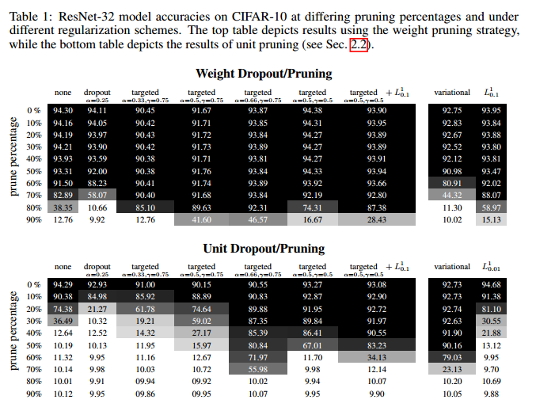
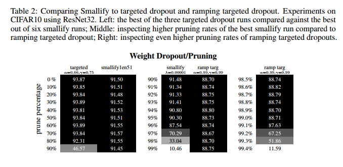

Targeted Dropout论文阅读笔记
本文由谷歌大脑首席科学家Geoffrey E. Hinton 联合牛津大学等国际神经网络大拿共同发表与NIPS 2018，其主要给出了一个新的Dropout实现策略，核心是在常规的Dropout之前加入类似于树状剪枝的操作，据文章称可以提高运行效率。Git repo # 1. 背景 在过去的很长一段时间中，学者们通过提出各式各样的改进策略来改进神经网络稀疏性，以优化训练性能和测试表现。其中诸如将某个神经元的全值设置为0，或是采用随机剪枝的方法将神经网络中的相关节点直接剔除，以加强单个神经元的性能，达到总体性能最优。这类做法可以在训练过程中使用诱导正则化器(L1或L0正则化)来引导神经网络朝着稀疏化的方向进行训练。或者是在整个神经网络训练完毕之后进行裁剪。在实际情况下，现代神经网络通常有数百万个参数，通过给定的度量为神经网络选取最优参数组合是一个非常困难的问题。为了降低剪枝复杂度，通常只是简单的去极值或是去除最不敏感的权值。
基于这样的现状，即dropout规则化本身通过在每次前传的过程中通过稀疏化网络来加强训练期间的稀疏性。这样也加强网络对特定形式的鲁棒表示，我们假设是如果我们有明确的事后稀疏化优化目标，那么我们就可以将dropout规则应用到某个神经元上，使得在最终决策中最有用的神经元表现的更好。其核心思想是对神经网络单元的重要性和权重进行排序，然后将dropout应用与那些重要性较低的单元中。通过对比常规dropout策略，这样的策略使得最终结果也能很好的结合，也说明了方法的鲁棒性。基于Targeted dropout的神经网络优点在于，经过有效的训练最终的网络非常健壮。同时其实现难度低，在Tensorflow或者PyTorch下都仅需要修改两行代码。最明显的一点是：使用者可以对最终的神经网络稀疏程度进行控制，并且在整个训练过程中加强训练效果。 # 2. Targeted Dropout ## 2.1 Dropout 这项工作使用了两项最为流行的Dropout技术。假设全连接层输入的张量为\(X\)，权重矩阵为\(W\)，输出矩阵为\(Y\),对应的掩膜\({M}_{i,o}\sim Bernoulli(\alpha)\)，则文章所采用的技术有如下的形式化表示
Unit dropout: \[ Y=(X\bigodot M)W \] > 随机丢弃输入的值，减少输入值中的内部关联，避免过拟合
Weight dropout: \[ Y=X(W\bigodot M) \] > 随机降低或丢失神经元的权值，直观看来便是对层与层之间的神经元的链接进行切断。
2.2 基于数量级的修剪
一个流行的剪枝策略是一以数量级为基础的剪枝策略。这种策略把前\(k\)个数量级的权值重要性视作同等重要。通过设定\(k\)值便可以得到限定在这个\(k\)中的元素（输入值或权重）。如：
Unit purning: 通过L2正则化后对权重矩阵进行剪枝.范围在1到\({N}_{col}\left(W \right)\) 之间
\[\mathcal{ W }\left(\theta \right)=\left\{ { \underset {1\le o\le { N }_{ col }\left( W \right) } { argmax-k }\left\| { w }_{ o } \right\| } _{ 2 }\Big|W\in \theta\right\}\]
Weight purning: 将每个权重通过L1正则化单独运算，其中前\(top-k\)是相对于同一滤波器的其他权重
\[\mathcal{W}\left(\theta\right)=\left\{ \underset { 1\le i\le { N }_{ row\left( W \right) } } { argmax-k } { \left| { W }_{ io }\right|} \Big| { 1\le o\le { N }_{ col\left( W \right) } }, W\in \theta \right\}\]
相较于权重修剪倾向于在保留更多任务性能的前提下只能进行粗略的修剪，对输入单元的修剪可以在同等前提下实现更大的计算节省性能。
2.3 方法细节
假设有一个神经网络参数集合为\(\theta\)，并且文章的剪枝策略由上述公式(1)和(2)中定义。文章的目的是找到最优的\(\theta^\ast\)使得文章最终的损失函数\(\mathcal{E}\left(\mathcal{W}\left({\theta^\ast}\right)\right)\)降到最低，同时\({|\mathcal{W}\left({\theta^\ast}\right)|} \le k\),也就是说即希望保留\(k\)个权值最大的权重。然而也希望低权值的元素能够保留其在训练时的价值，因此文章引入了随机性处理过程，即选取\(\gamma\)占比的目标在\(\alpha\)概率下进行dropout,这也意味着每一次训练的过程都是选取\(\gamma|\theta|\)组权重用以做dropout,这部分的dropout采用的比率为\(\alpha\), 因而最终的dropout目标即可计做:\(\left(1-\gamma\cdot\alpha\right)|\theta|\)，如论文所揭示的一样，结果减少了重要的子网络对不重要子网络的依赖，从而减少了训练过程中因剪枝导致的性能下降。


3.结论
文章提出Targeted Dropout作为一种简单和非常有效的正则化工具，将后自适应剪枝策略合并到神经网络的训练过程中，而不会对特定架构的底层任务性能产生重大影响。Targeted Dropout的主要优点之一是实现简单和直观、灵活的超参数
4. 注释
在通读了这篇短短的会议文章后，第一个感觉是文章的简明扼要，第二是大佬写文章真随意。
对于文章本身，首先从权值dropout和输入张量dropout两个方面对现有的方法进行了形式化，之后利用神经网络的损失函数作为调优目标进行理论推到，核心就是\(\left(1-\gamma\cdot\alpha\right)|\theta|\)这个公式，但是或许是我才疏学浅，这样的工作其实在日常调参中也有类似的应用，具体的剪枝策略也仅仅是增加了一个参数，目前在只读了短文的基础上还没有对这个文章有很深入的理解，后续看下代码。
应用方面，当然是一个好的小点，又可以加到现在的工作之中，并且实现难度不大，在文章的测试数据来看，效果还是很好的。
论文原文：